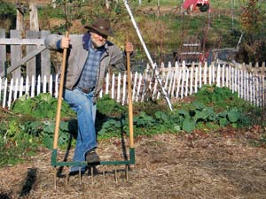
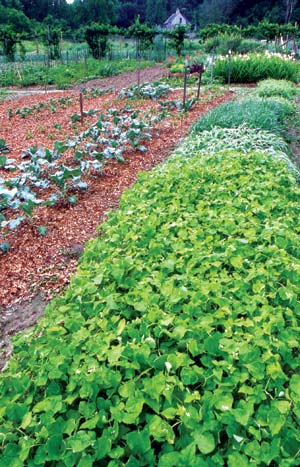
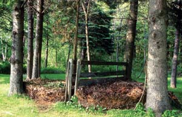
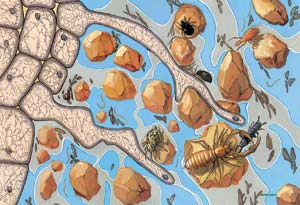

Build Better Garden Soil
Caring for the soil is the key to growing more of our own food.
By Harvey Ussery
April/May 2007
Soil is the key to health, both for ourselves and for the animals and plants we depend on. But soil “in good heart,” as farmers used to say, is not something we can take for granted. For gardeners and farmers, caring for the soil must always be our first priority, and the process of building soil fertility is vast and complex.
The best question to ask is not “What is the best soil care?” but “What is the best soil care for this particular piece of ground?” Over the seasons, the soil itself becomes our teacher and shows us which practices lead to beneficial changes.
Let’s begin with this intriguing question: Why is it that in natural soil ecologies, soil fertility tends to accumulate spontaneously over time, while human agriculture often leads to drastic declines in soil quality? Whether we look at prairies, bogs or forests, we find that topsoil tends to deepen and become more fertile over time. Why are humans more likely to destroy than to build soil quality, when natural systems operating on their own produce the opposite result?
One implication is obvious: The key to soil management is imitating natural systems. But perhaps the best answer to this riddle is that topsoil is alive, and any approach to agriculture that treats it as an inert substance is almost certain to be destructive.
What is Topsoil?
Topsoil is formed from tiny particles weathered or worn from their parent materials (rock, of various types). Both the chemical composition of the parent material and the average particle size help determine fundamental characteristics of soil - whether it is acid, alkaline or neutral; and whether it is sand (large particle size) or clay (extremely small particle size). But a layer of small rock particles is not “soil,” and it is not capable of growing a crop.
Healthy topsoil also consists of a complex community of living creatures, and each class of organisms has its own strategies for feeding itself, adapting to environmental conditions and coexisting with its neighbors. Any practice that destroys some or all of those classes of organisms is likely to reduce soil fertility.
The number of living organisms in healthy topsoil is enormous: It has been estimated, for example, that the total biomass of organisms in a prairie soil exceeds 15 tons per acre, with the weight of the bacteria alone - invisible to the eye - totaling 13 tons! A single teaspoon of that soil may contain 600 to 800 million individual bacteria from a possible 10,000 species; several miles of fungal hyphae; 10,000 individual protozoa; and 20 to 30 beneficial nematodes from a possible 100 species.
Living organisms in the soil include bacteria, fungi, protozoa (single-cell animals), nematodes (minuscule non-segmented worms), arthropods (insects, spiders, mites and centipedes - from microscopic to several inches long), earthworms, and larger organisms such as moles, voles and even gophers, which have their role to play in recycling nutrients and maintaining good soil structure.
The Role of Organic Matter
Organic matter is constantly being produced in and over the topsoil - fallen leaves, dead plants and animals, roots shed by living plants, and droppings of passing animals. Different classes of soil organisms “specialize” in breaking down different sorts of organic matter in accordance with the natural principle that every creature’s “waste” is a priceless resource for another, and they pass their own wastes on to other members of the soil community.
The energy represented by the original organic material is passed from one level of the soil food web to another, rather than being lost from the system. The energy of sunlight is constantly being added at the other end of the equation through photosynthesis, so if all nutrients are re-captured by soil organisms, the result has to be added fertility.
For example, when fresh green material is added - say in the form of crop residues, or green cover crops cut and used as mulch - it is bacteria that take the lead in breaking them down. Nematodes, protozoa and tiny arthropods feed on the bacteria, and are fed on in turn by larger arthropods and nematodes. Earthworms feed on the bacteria, as well as leaves and other organic matter, converting it all to castings rich in minerals and other nutrients in forms easy for plant roots to take up, and conducive to good soil structure. In the meantime, soil fungi colonize and feed on the denser plant tissues such as stems and leaf veins, as well as other more carbon-dense organic materials such as leaf mulches.
Dead organic material is not the only source of food for soil-dwelling species. Roots of living plants form cooperative, mutually beneficial associations with various soil organisms. Some plants, including beets and spinach, form such associations with bacteria; others, including tomatoes, potatoes and corn, with mychorrhizal fungi. In both cases, the plant creates complex sugars and other nutrients in its leaves, then releases them through its roots to feed its “buddies” in the soil. In exchange, the mychorrizae or bacteria provide nitrogen, enzymes, minerals and other nutrients to the roots in forms easy for them to absorb.
These are simple sketches of complex relationships and food exchange. The end result of the process is humus, the final residue of the parent organic materials, now visible only as a darkening of the soil. The microscopic humus particles are no longer a source of food for soil organisms, but they help with water retention, bond with nutrients in the soil and pass them on to plant roots, and bind carbon into the soil. Many soil organisms also help “glue” soil particles together into larger aggregate particles, increasing the size of pore spaces between particles, bringing more air to the soil (most soil organisms need oxygen to thrive) and increasing water flow down into the soil (reducing chance of runoff and erosion in heavy rains).
Some soil organisms are pathogens, but with a diverse mix of species, they are usually controlled by other organisms in the system, which feed on the disease-causing organisms, out-compete them, or otherwise inhibit them. Simply put: Diversity of soil organisms is key to plant health.
Strategies for Managing Soil
Most of us have grown up thinking that soil fertility revolves around the question of what we need to buy and add to soil. We sometimes use soil tests to guide us in making the proper purchases. When we begin working with a piece of ground, especially if it has been abused, there may be additions we need to make. Be cautious about soil tests, however, because different laboratories use different procedures, report results differently and adopt different approaches to interpreting the results.
For example, I remember how confused I was by test results I used to get from my local extension service: They always noted that both phosphorus and potassium were “very high” - and then went on to recommend application of chemical fertilizers containing 10 percent of each. Later, I worked with a soil consultant (a student of pioneering soil scientist William Albrecht), who also noted the high levels of phosphorus and potassium, but recommended no fertilizer application.
Indeed, he pointed out that it would be easy for my soil to rise to dangerously excessive levels of phosphorus if I wasn’t careful with certain organic matter applications, such as manures. Since most soil analyses focus so much on crop needs for nitrogen, imagine my surprise when he also recommended no added nitrogen. When I asked about that, he replied dismissively, “Oh, with organic matter at the level you have, you don’t need any added nitrogen, except maybe a little for really heavy feeders like corn.”
By all means, find and work with a competent soil consultant if you feel your soil has serious deficiencies or special needs. But your main focus should not be what purchased inputs you need to add to your soil, but on strategies to maximize the diversity, health and population densities of soil organisms.
Three agricultural practices in particular are injurious to soil life:
Monoculture. The growing of a single species on vast tracts reduces diversity of soil life.
Use of harsh chemicals. Many chemicals - whether intended to fertilize crops, suppress disease, or kill insects and weeds - also destroy populations of soil organisms.
Excessive tillage. Frequent tillage of soil disrupts soil life and robs it of its carbon (organic matter) reserves.
The alternative to such destructive practices is to imitate natural soil ecologies, which will:
Take advantage of the diversity and population densities of soil organisms. While homesteaders are unlikely to practice monoculture - to grow nothing but carrots, for example - we should constantly find ways to “mix it up” in how we manage our soil. Crops of different families should rotate over the available ground in succeeding seasons. Diverse sources of organic matter should be used - composts, mulches, cover crops, etc.
Feed the soil using sources of fertility grown on the homestead or close by. Deep-rooted cover and fertility crops can “mine” minerals from the deep subsoil and make them available to more shallow-rooted plants. Nitrogen-fixing legumes (clovers, alfalfa, beans and peas) can boost nitrogen for heavier-feeding crops. Recycle autumn leaves and crop residues by composting or using them as mulches. Manures and mulching materials may be available from nearby farms. If a soil test does indicate the need to add minerals, use slow-release rock powders, such as greensand or colloidal rock phosphate, rather than highly soluble chemical fertilizers, which quickly leach into groundwater.
Protect and improve soil structure. Plant in wide beds and don’t compact the soil by walking in the growing spaces. Keep the soil constantly covered - by closely-planted crop plants, cover crops or mulches. Addition of lime to most clay soils can help “flocculate” the almost microscopic soil particles into aggregate clumps, resulting in a looser, more open soil structure with better air and water penetration. When tight soil must be loosened, do it with a broadfork rather than a power tiller or even a spading fork to avoid inverting soil layers.
The Long-term Effects of Tillage
The amounts of carbon involved are not trivial: Every 1 percent increase of carbon sequestered in a garden’s soil is estimated to be equivalent to the weight of all the carbon in the atmosphere above that garden, right out to the vacuum of space. By reducing tillage while adding all the organic matter we can, we reverse CO² emission: Carbon is bound up in soil in the form of humus.
In 8 Strategies for Better Garden Soil, Harvey Ussery discusses how to get started with these three soil management techniques.
|
 MICHAEL FOCAZIO Instead of tilling, Harvey Ussery recommends using a broadfork to loosen the soil for planting. |
 DAVID CAVAGNARO Build fertile soil by using mulches and cover crops such as this fast-growing buckwheat. |
 LYNN KARLIN Compost whatever organic materials you have on hand, including yard waste such as grass clippings and fall leaves. |
 DAVID CAVAGNARO Applying compost to your crops annually is the one of the best ways to build soil fertility. |
 MICHAEL ROTHMAN A host of tiny soil organisms live among soil particles and are often fed by the carbohydrates released by plant roots. |
|